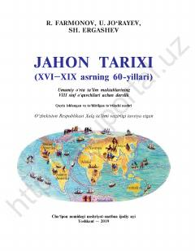

JT8-sinf o‘quvchilari uchun XVI-XIX asr jahon tarixi bo‘yicha o‘quv qo‘llanma.
Ushbu darslik umumiy o‘rta ta’lim maktablarining 8-sinf o‘quvchilari uchun mo‘ljallangan bo‘lib, XVI-XIX asrning 60-yillarigacha bo‘lgan jahon tarixini qamrab oladi. Kitobda yangi davr sivilizatsiyasi, kapitalistik munosabatlar, sanoat inqilobi va fan-texnika taraqqiyoti kabi muhim tarixiy jarayonlar yoritilgan.